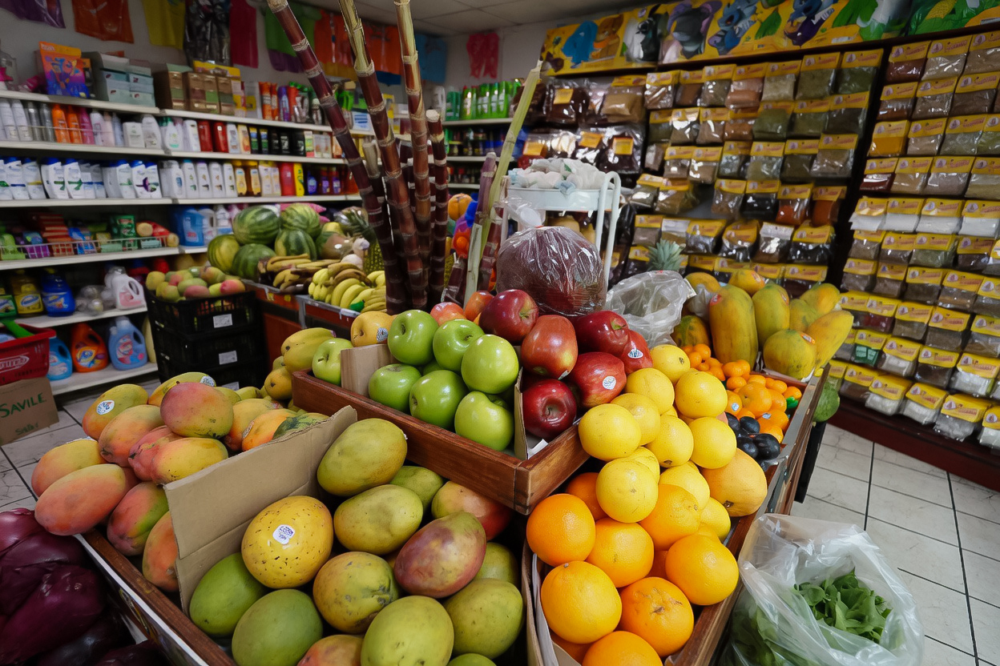
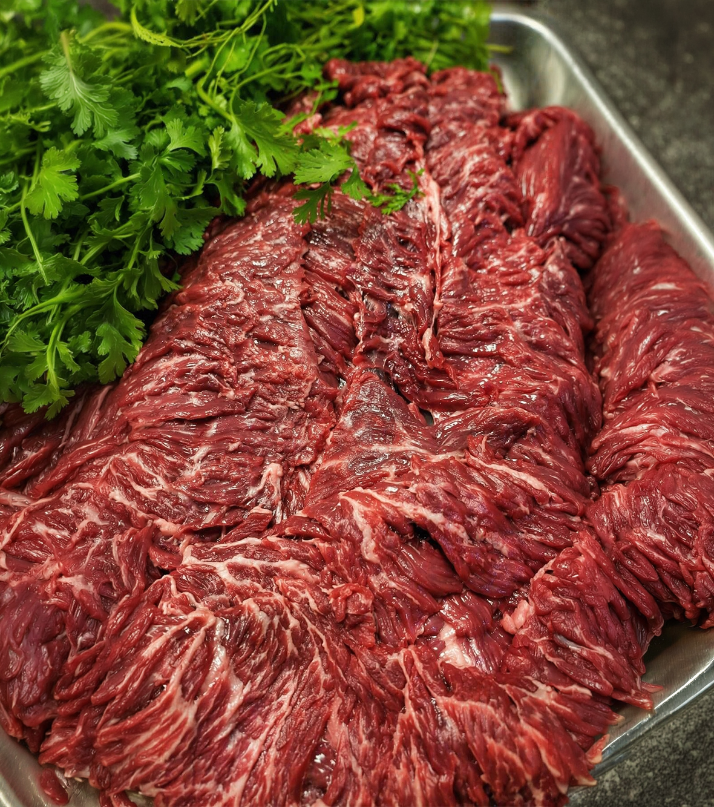
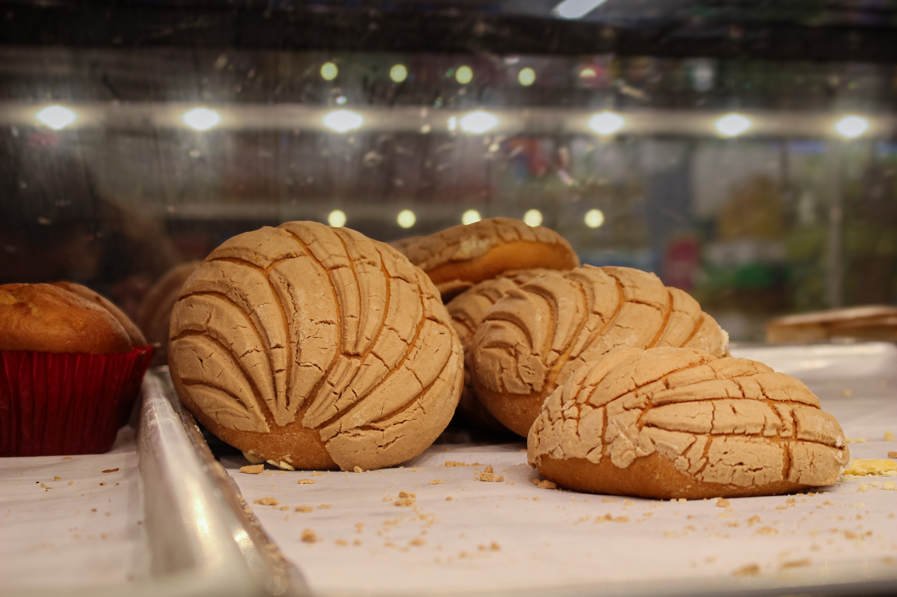
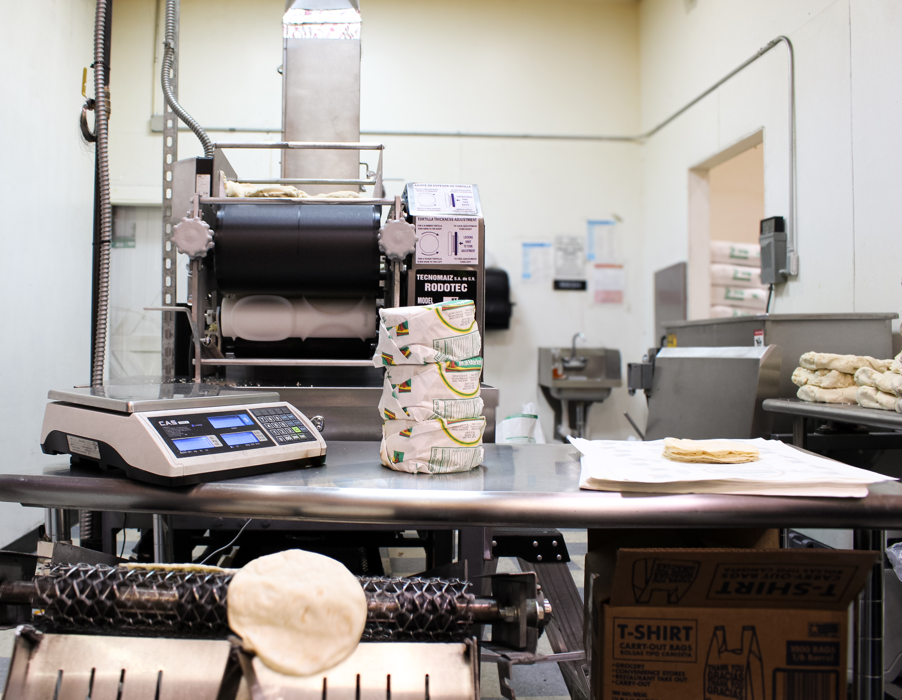
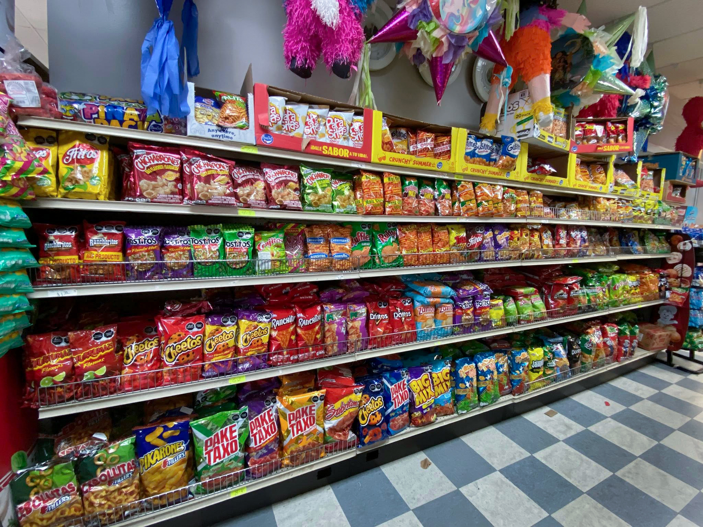
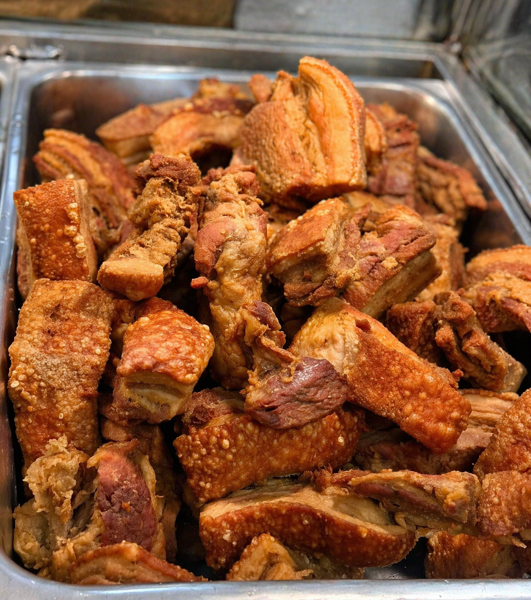
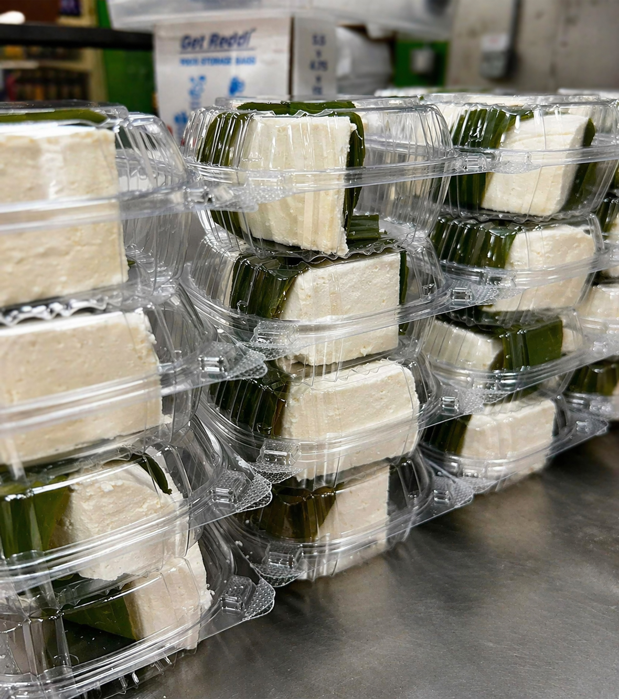

")
Mercado latino en Fremont
Un supermercado latino con productos auténticos, incluidos productos centroamericanos, para cocinar con sabor de verdad.
Tu tienda latina en Fremont, Nebraska
El Tikal Market #1 es un supermercado latino en Fremont, Nebraska, sobre N Main St, con productos de Guatemala, México y Centroamérica. Reúne abarrotes, pan dulce y bolillos en la panadería, tortillería con tortillas hechas a mano y carnicería con carnes frescas, con atención cercana como en casa. Si quieres ver más opciones, visita todas las ubicaciones de El Tikal Market o explora productos latinos y favoritos importados.
Lunes a Sábado: 7:00 AM – 9:00 PM · Domingo: 8:00 AM – 8:00 PM
Un supermercado latino con productos auténticos, incluidos productos centroamericanos, para cocinar con sabor de verdad.
Carnes frescas y cortes de calidad para desayunos, comidas y celebraciones.
Hechas diariamente con sabor y tradición.
Variedad de productos que te hacen sentir como en casa.
En nuestro supermercado latino de Fremont encontrarás carnicería con carnes frescas, pan dulce y panadería con olor a hogar, y una tortillería donde salen tortillas hechas a mano, además de abarrotes y productos centroamericanos de confianza.
Nuestra tienda en el centro de Fremont es un punto de encuentro para la comunidad que busca calidad, sabor y tradición.
También puedes visitar El Tikal Market #2 en Fremont (E 23rd St), nuestro mercado latino en Omaha (24th St) o El Tikal Market en Schuyler.
Nos visitan familias de North Bend, Arlington, Valley y Winslow cuando buscan una tienda latina cerca de Fremont.
Con la confianza de la comunidad de Fremont por su atención cercana y productos auténticos.

Temporada, color y frescura para tu cocina: lo básico y lo difícil de encontrar.

En la carnicería: carnes frescas de res, cerdo, pollo y mariscos listos para la cocina todos los días.

Pan dulce, bolillos y pasteles para disfrutar en familia.

Tortillas de maíz y harina hechas a mano todos los días.

Abarrotes, botanas y productos centroamericanos de Guatemala, México y toda la región, junto a favoritos que cuesta encontrar.

Envía dinero de forma rápida, segura y confiable con Intermex.

Antojitos y platillos caseros para llevar: rápido, rico y con sabor a hogar. Si buscas opciones listas para compartir, conoce Pollo Pinulito en Fremont.

Queso fresco, crema y favoritos para acompañar tus comidas de todos los días.
Nuestro supermercado latino en el corazón de Fremont, sobre N Main St, ofrece fácil acceso y estacionamiento para llenar la despensa, pasar por la carnicería o la panadería y seguir con el día. Cerca de comercios y servicios del centro.
El Tikal Market #1Te atendemos con calidez, como en familia. Somos parte de tu comunidad y de tu día a día.
Desde la carnicería y la fruta hasta el pan dulce de la panadería, elegimos con ojo lo que vas a disfrutar en casa.
Calidad y ahorro para que lleves más a casa, sin renunciar al sabor ni a la tradición.
Un espacio donde la comunidad latina de Fremont y Nebraska se encuentra, crece y comparte.

El Tikal Market #1 es un supermercado latino de barrio en Fremont donde las familias abastecen el diario con fruta, verdura, marcas conocidas y sabores que se sienten como en casa. Sobre N Main St te atiende un equipo que entiende lo que buscas y un surtido pensado para la comunidad del este de Nebraska.
En la carnicería encuentras carnes frescas, en la panadería pan dulce y bolillos, y en la tortillería tortillas hechas a mano, además de productos centroamericanos y el resto de tu mandado en un solo lugar, aquí en Fremont.